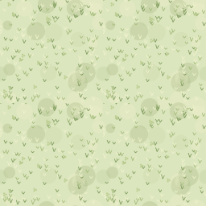
Grass
grass · slot 0 · row 1, column 1
Park lawns and planted courtyards; mottled ground cover with fine blades.
grass.svgEach material has one named, editable SVG. These neutral textures are multiplied by each model’s color in the game.
Edit a source below, then run node sf/build.mjs to regenerate the atlas, this reference, and explore.html. The development server rebuilds the texture sheet when you refresh.

grass · slot 0 · row 1, column 1
Park lawns and planted courtyards; mottled ground cover with fine blades.
grass.svg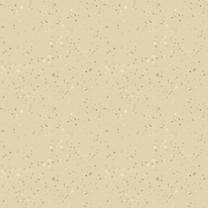
dirt · slot 1 · row 1, column 2
Walking paths, dry scrub and exposed soil; pebbles and fine grain.
dirt.svg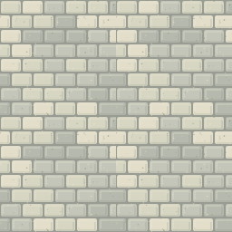
cobble · slot 2 · row 1, column 3
Plazas and building footprints; irregular paving stones and joints.
cobble.svg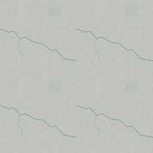
asphalt · slot 3 · row 1, column 4
Street surfaces; aggregate flecks and hairline wear.
asphalt.svg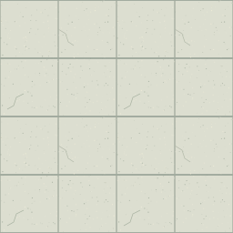
sidewalk · slot 4 · row 2, column 1
Pavements and curbs; concrete slabs and expansion joints.
sidewalk.svg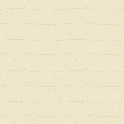
sand · slot 5 · row 2, column 2
Ocean Beach and sandy ground; light grains and soft surface variation.
sand.svg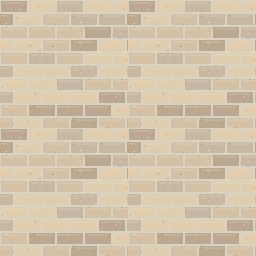
brick · slot 6 · row 2, column 3
Masonry walls and architectural details; staggered courses with mortar.
brick.svg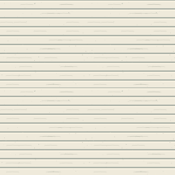
clapboard · slot 7 · row 2, column 4
Painted townhome siding; horizontal timber boards.
clapboard.svg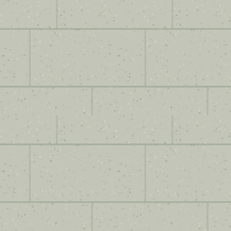
roof · slot 8 · row 3, column 1
Dark roofing and flat roof surfaces; weathered roofing grain.
roof.svg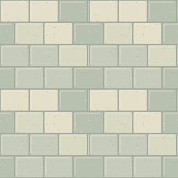
stone · slot 9 · row 3, column 2
Civic masonry, foundations and monuments; cut stone blocks.
stone.svg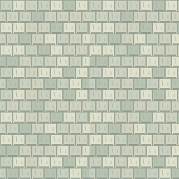
shingles · slot 10 · row 3, column 3
Pitched residential roofs; overlapping shingle courses.
shingles.svg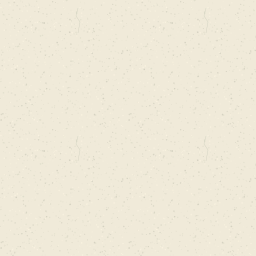
stucco · slot 11 · row 3, column 4
Plastered façades; fine, uneven mineral grain.
stucco.svg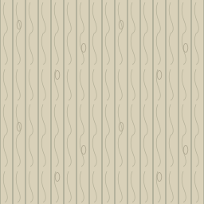
wood · slot 12 · row 4, column 1
Wooden stairs, balconies and fixtures; long timber grain.
wood.svg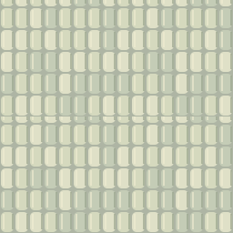
roofTile · slot 13 · row 4, column 2
Tiled roofs; curved tile courses with recessed seams.
roof-tile.svgglass · slot 14 · row 4, column 3
Windows and glazed towers; subtle reflections and pane detail.
glass.svg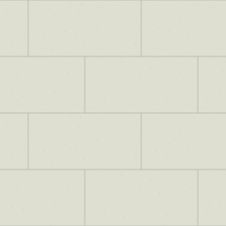
concrete · slot 15 · row 4, column 4
Structural pads and infrastructure; restrained mineral texture.
concrete.svg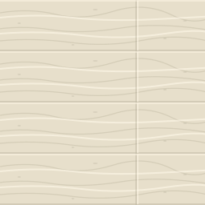
travertine · slot 16 · row 5, column 1
Estate arcades and limestone piers; long mineral veins, pores and fine honed joints.
travertine.svg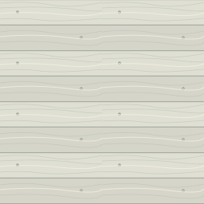
boardConcrete · slot 17 · row 5, column 2
Cantilevered terraces; timber-form impressions, panel ties and subtle aggregate.
board-concrete.svg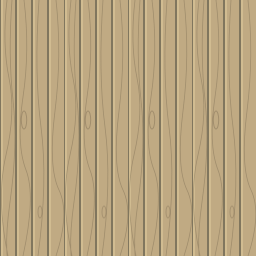
cedar · slot 18 · row 5, column 3
Eichler screens and soffits; narrow vertical boards with restrained warm grain.
cedar.svg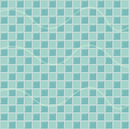
poolMosaic · slot 19 · row 5, column 4
Glazed pool basins; small alternating ceramic tesserae and caustic light.
pool-mosaic.svg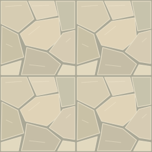
flagstone · slot 20 · row 6, column 1
Estate terraces and garden paths; irregular sandstone slabs with fine joints.
flagstone.svg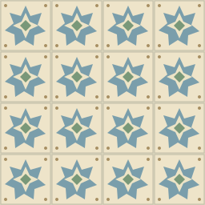
glazedTile · slot 21 · row 6, column 2
Mediterranean courtyards; hand-painted geometric ceramic borders.
glazed-tile.svg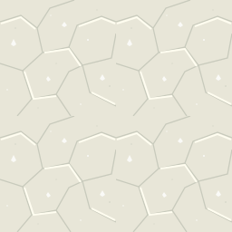
saltCrust · slot 22 · row 6, column 3
South Bay evaporation ponds; cracked mineral crust, crystalline seams and fine grains.
salt-crust.svg
limewash · slot 23 · row 6, column 4
Southern coastal homes and neighborhood arcades; trowel marks and softly mottled mineral paint.
limewash.svg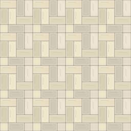
herringbone · slot 24 · row 7, column 1
Neighborhood courtyards, porch floors and garden paving; small beveled pavers.
herringbone.svg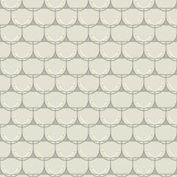
fishscale · slot 25 · row 7, column 2
Coastal gables and Craftsman accents; overlapping rounded timber shingles.
fishscale.svg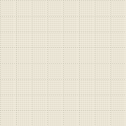
canvasWeave · slot 26 · row 7, column 3
Striped market awnings and neighborhood shade sails; fine warp, weft and stitched seams.
canvas-weave.svg